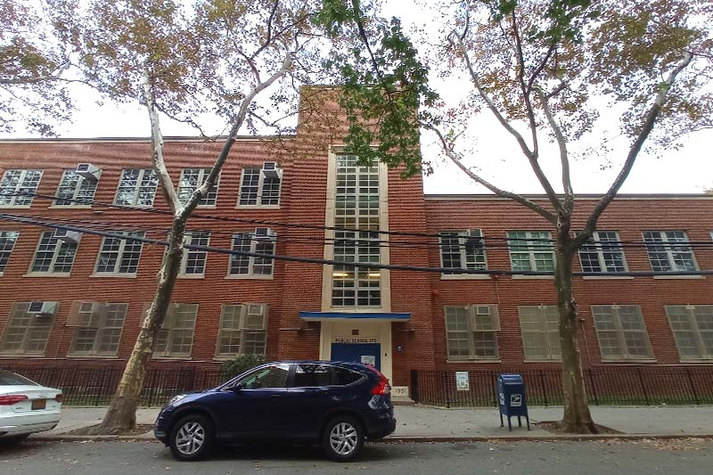
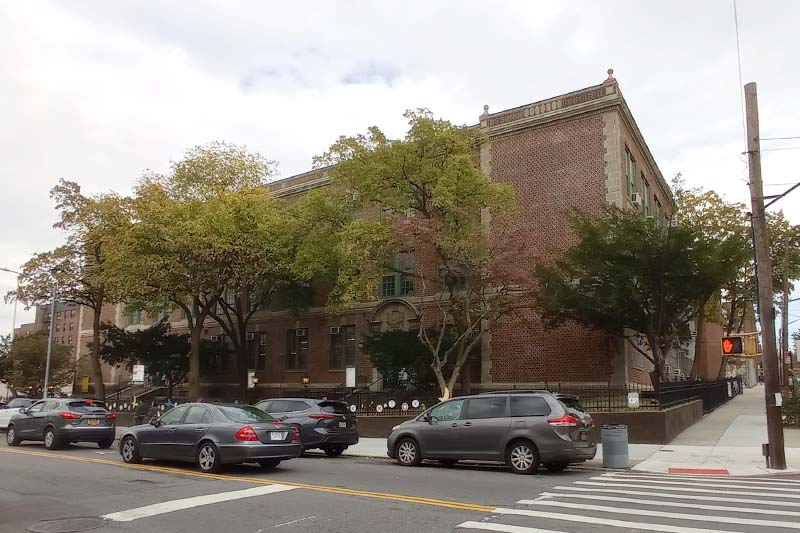
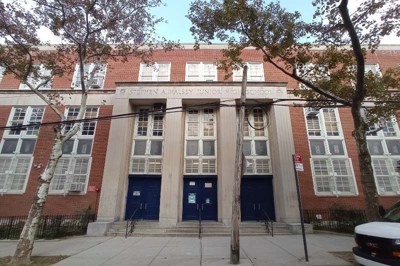

Schools

P.S. 175 The Lynn Gross Discovery School
Location: 64-35 102nd St, Queens, NY 11374School Website: ps175q.com
Academics: B+
Teachers: A-
Diversity: A
For more information, visit Niche.

P.S. 139 Rego Park
Location: 93-06 63rd Dr, Queens, NY 11374School Website: ps139q.com
Academics: B+
Teachers: A
Diversity: A+
For more information, visit Niche.

J.H.S. 157 Stephen A. Halsey
Location: 63-55 102nd St, Queens, NY 11374School Website: halsey157.org
Academics: A-
Teachers: A
Diversity: A+
For more information, visit Niche.
Forest Hills High School
Location: 67-01 110th St, Queens, NY 11375School Website: foresthillshs.org
Academics: B+
Teachers: A-
Diversity: A+
For more information, visit Niche.